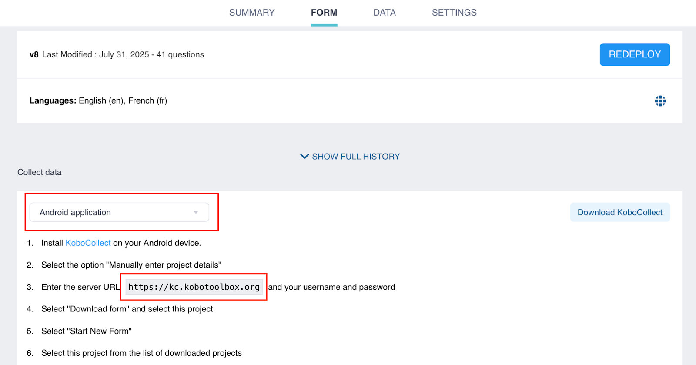

Search the knowledge base, browse our resources, and visit our forum for more detailed information
Read in English | Leer en español | اقرأ باللغة العربية Dernière mise à jour : 19 Sep 2025
KoboCollect est une application KoboToolbox gratuite et open source conçue pour la collecte de données sur les appareils mobiles Android. Ses capacités hors ligne et sa compatibilité avec la plupart des appareils Android la rendent idéale pour le travail de terrain.
Avant d’utiliser KoboCollect, vous devez créer un compte KoboToolbox sur le site web KoboToolbox et déployer des formulaires de collecte de données.
Cet article explique comment se connecter à KoboCollect pour la collecte de données. Pour en savoir plus sur la configuration des paramètres de KoboCollect et la collecte de données avec l'application, consultez Personnalisation des paramètres de KoboCollect et Collecte de données avec KoboCollect.
L’application KoboCollect peut être téléchargée depuis le Google Play Store pour les appareils Android fonctionnant sous la version 5 ou supérieure.
Remarque : Nous vous recommandons d'utiliser la dernière version de l'application (v2025.2), car elle inclut des fonctionnalités et des corrections de bugs non disponibles dans les versions antérieures.
Pour collecter des données avec KoboCollect, vous devez configurer l’application KoboCollect sur votre appareil mobile pour vous connecter au serveur KoboToolbox. Cela vous permet de télécharger les formulaires déployés depuis KoboToolbox et d’envoyer les données collectées vers le serveur.
Pour connecter KoboCollect au serveur KoboToolbox, vous aurez besoin de votre URL KoboCollect, de votre nom d’utilisateur et de votre mot de passe. Après la configuration manuelle initiale, vous pouvez générer un code QR pour configurer d’autres appareils.
Remarque : Dans l'application KoboCollect, les comptes utilisateurs sont appelés Projets.
Pour configurer manuellement KoboCollect, vous devrez identifier votre URL KoboCollect. Cette URL est spécifique à KoboCollect et diffère de l’URL utilisée pour accéder à votre compte KoboToolbox.
Votre URL KoboCollect dépend du serveur de votre compte :
Serveur KoboToolbox |
URL KoboCollect |
|---|---|
Le serveur KoboToolbox mondial |
https://kc.kobotoolbox.org/ |
Le serveur KoboToolbox Union européenne |
https://kc-eu.kobotoolbox.org/ |
Serveur privé |
Unique à chaque organisation |
Vous pouvez également trouver l’URL KoboCollect sur la plateforme KoboToolbox. Accédez à l’onglet FORMULAIRE de votre projet et sélectionnez Application Android dans le menu déroulant Collecter des données. L’URL KoboCollect sera indiquée à l’étape 3.

Une fois que vous avez identifié votre URL KoboCollect, suivez ces étapes pour configurer la connexion au serveur :
Ouvrez l’application KoboCollect.
Sélectionnez Saisir les détails du projet.
Saisissez l”URL KoboCollect, votre nom d’utilisateur et votre mot de passe.
Appuyez sur Ajouter.
Lorsque la configuration est terminée, le menu principal s’affiche.
L’utilisation d’un code QR permet de configurer efficacement KoboCollect sur plusieurs appareils avec les mêmes paramètres de serveur (URL KoboCollect, nom d’utilisateur, mot de passe et paramètres de configuration du projet). Cela peut être utile pour éviter de répéter les étapes manuelles ou pour configurer les appareils des enquêteurs sans partager les mots de passe du compte.
Remarque : Pour utiliser la méthode du code QR, vous devez d'abord configurer manuellement un appareil, puis copier le code QR généré sur les autres appareils.
Pour accéder à votre code QR :
Accédez au menu Projets et sélectionnez le projet que vous souhaitez copier.
Appuyez sur Paramètres.
Sélectionnez Gestion du projet.
Appuyez sur Reconfigurer avec un code QR.
Choisissez Code QR. Votre code QR apparaîtra à l’écran.
Prenez une capture d’écran du code QR pour le partager afin de configurer d’autres appareils. Vous pouvez également revenir à ce menu à tout moment pour accéder à nouveau au code QR.
Pour configurer d’autres appareils à l’aide du code QR :
Ouvrez KoboCollect sur l’appareil que vous souhaitez configurer.
Appuyez sur Configurer avec un code QR.
Scannez un code QR avec l’appareil photo de l’appareil, ou appuyez sur les trois points dans le coin supérieur droit et sélectionnez Importer un code QR pour utiliser une capture d’écran enregistrée sur votre appareil.
Si la configuration réussit, l’application sera configurée automatiquement.
Remarque : Le code QR contient vos identifiants de compte, y compris votre mot de passe. Toute personne qui le scanne aura les mêmes autorisations d'accès que le compte à partir duquel il a été généré. Si vous souhaitez uniquement que quelqu'un collecte des données (par exemple, un enquêteur), assurez-vous que le compte utilisé pour générer le code QR n'a pas les autorisations de consulter, modifier ou supprimer des données. Pour protéger vos données, évitez de partager des codes QR provenant de comptes disposant d'un accès complet.
Les utilisatrices et utilisateurs peuvent connecter plusieurs comptes KoboToolbox et basculer facilement entre différents projets au sein de la même application KoboCollect, qu’ils se trouvent sur le même serveur ou sur des serveurs différents.
Pour configurer des projets supplémentaires dans KoboCollect :
Appuyez sur l”icône Projet située dans le coin supérieur droit.
Dans le menu Projets, appuyez sur Ajouter un projet.
Configurez un nouveau projet en utilisant l’approche manuelle ou en scannant un code QR.
Lorsque la configuration est terminée, le menu principal s’affiche.
Appuyez sur l”icône Projet pour ouvrir le menu. Les deux projets devraient maintenant être visibles.
Des projets supplémentaires peuvent être ajoutés en répétant le même processus. Le projet actif sera listé en premier dans le menu Projets. Pour basculer vers un autre projet, appuyez simplement sur son icône.
Pour en savoir plus sur la modification de l'affichage des projets pour faciliter leur reconnaissance et leur basculement, consultez Paramètres d'affichage du projet.
Il est également possible d’accéder aux projets dans KoboCollect sans mot de passe. Cela est utile pour les projets avec de nombreux enquêteurs, car cela évite d’avoir à créer des comptes individuels ou à partager des identifiants.
Remarque : Cette approche nécessite d'activer « Autoriser les soumissions à ce formulaire sans nom d'utilisateur ni mot de passe » pour vos formulaires. Pour en savoir plus sur les paramètres de partage au niveau du projet, consultez Partage de projets avec des paramètres au niveau du projet.
Pour vous connecter à KoboCollect sans authentification :
Activez « Autoriser les soumissions à ce formulaire sans nom d’utilisateur ni mot de passe » pour vos formulaires.
[Facultatif] Créez un compte KoboToolbox dédié pour les collecteurs de données et partagez vos formulaires avec ce compte.
Connectez-vous à KoboCollect en utilisant les identifiants suivants :
URL : URL KoboCollect suivie du nom d’utilisateur du compte (https://[kobocollect_url]/[username])
Nom d’utilisateur : (Laisser vide)
Mot de passe : (Laisser vide)
Cette approche permet aux utilisatrices et utilisateurs de télécharger et de soumettre des données à tous les formulaires partagés avec username qui ne nécessitent pas d’authentification.
Pour différencier les enquêteurs et suivre les soumissions, vous pouvez demander aux enquêteurs de saisir un nom d’utilisateur personnalisé, un numéro de téléphone et une adresse e-mail dans les Paramètres d’identité de l’utilisateur et de l’appareil.
Remarque : Cette approche peut être utile lorsque votre compte utilise l'authentification à deux facteurs, car vous ne pourrez pas télécharger de formulaires ni soumettre de données en utilisant l'approche normale.
Did you find what you were looking for? Was the information clear? Was anything missing?
Share your feedback to help us improve this article!
KoboToolbox is maintained by Kobo Inc.